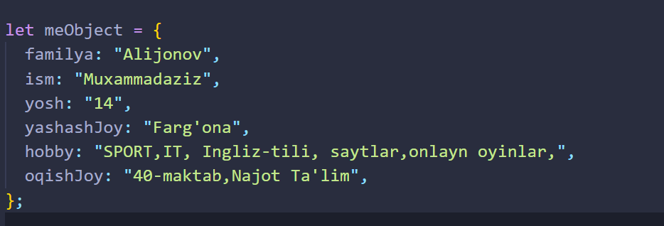
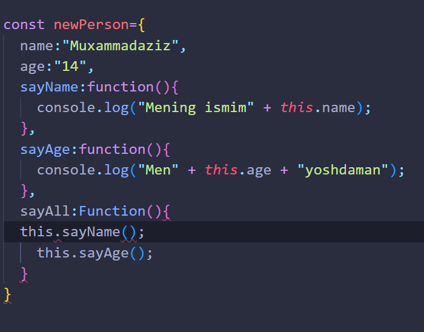

Hayotdan misol qiladigan bo'lsak undagi har bir barsa obyekt. Masalan olaganda odam. Uni ismi, familiyasi, yoshi, istaklari, biror hodisaga nisbatan javob harakatlari ( gapirish, o'qish, ovqat yeyishi), oila azolari haqida malumotlar mavjud. Javascriptda aynan shu malumotlarni o'zida jamlagan obyekt ko'rinishi quyidagicha:
Obyekt 2 qismdan iborat. chap qismi, bu obyekt xususiyatlari (familiya, ism, yosh).Ular javascriptda key dab ham ataladi. 2-qism parametr qiymati valyu deb ataladi ('Muxammadaziz', 'Alijonov', 14). Buni boshqacharoq ham tarivlash mumkin: Obyekt shunchaki birnechta o'zgarunchilar to'plami. O'zgaruvchilar har xil turda bo'lishi ahamiyatsiz. Esingizda bo'lsa massivga ham shunaqa tarif berdan edik (massiv ko'p sondagi o'zgaruvchilar yig'indisi, uning elementlari turlari har xil bo'lishi mumkin).
Lekin aslida massiv ham obyektning xususiy holi. Javascriptda hamma
narsa obyekt. String, sonli o'zgaruvchilar funksiyalar ham
obyekt(obyektning hususiy hollari).
Obyekt yaratishning 2 xil usuli mavjud:
Ikkalasi ham bir xilda ishlaydi.
Quyidagi misolni ko'ring, Unda obyek metodlari bilan ishlash, metod va xususiyat(property)larni ishlatish ko'rsatilgan

this - global scope holatida window objectini qaytaradi. window ==
this -> true
Agar this kalit so'zi - object ichidahi method (funtion) da ishlatilinsa,
bunda osha method (funtion) e'lon qilingan objectga teng bo'ladi